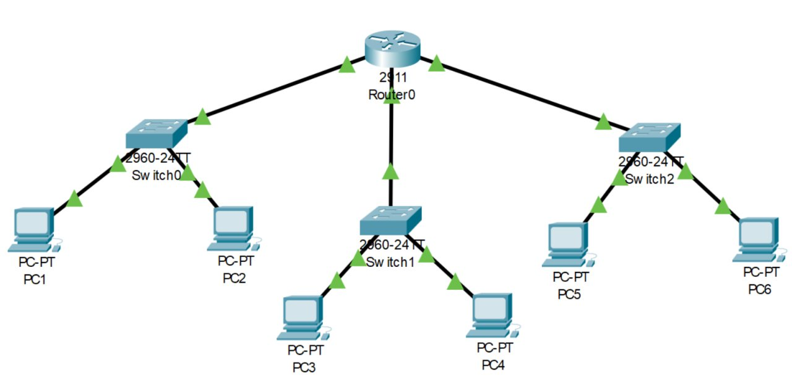

Administrer les réseaux et l'internet
- En choisissant les solutions et technologies réseaux adaptées.
- En respectant les principes fondamentaux de la sécurité informatique.
- En utilisant une approche rigoureuse pour la résolution des dysfonctionnements.
- En respectant les règles métiers.
- En assurant une veille technologique.
Apprentissages critiques
Maîtriser les lois fondamentales de l'électricité afin d'intervenir sur des équipements de réseaux et de télécommunication.
J'ai étudié les lois fondamentales de l'électricité (loi d'Ohm, lois de Kirchhoff, loi des mailles et des nœuds) et réalisé des mesures de tension, courant et résistance sur des circuits simples en TP avec multimètre.
Ces notions sont la base des systèmes électroniques embarqués dans les équipements réseau. Comprendre l'alimentation électrique d'un équipement, ses limites et ses protections est essentiel avant d'intervenir dessus.
Grâce aux cours et TP de R1.04 (Fondamentaux des systèmes électroniques) : mesures sur circuits série et parallèle, utilisation du multimètre et premières notions d'oscilloscope.
L'application de la loi des mailles sur des circuits comportant plusieurs branches m'a demandé plusieurs essais avant de trouver la bonne méthodologie.
J'ai compris comment les grandeurs électriques fondamentales s'appliquent aux composants réels, ce qui me permet de lire une datasheet et de comprendre l'alimentation d'un équipement réseau.
Je schématiserais systématiquement les circuits avant de les câbler pour anticiper les erreurs de montage et gagner du temps en TP.
Comprendre l'architecture et les fondements des systèmes numériques, les principes du codage de l'information, des communications et de l'Internet.
J'ai étudié les bases de la numération (binaire, hexadécimal), les encodages de l'information et le modèle TCP/IP, en réalisant des exercices de conversion et d'analyse de trames réseau.
Comprendre comment l'information est codée et transportée est la base de tout travail réseau : sans ces fondements, il est impossible de configurer ou de diagnostiquer un équipement.
À travers les cours R1.02 (Architecture des réseaux) et R1.06 (Architecture des systèmes numériques), des TPs d'analyse avec Wireshark et des exercices sur le modèle OSI et TCP/IP.
La distinction entre les couches du modèle OSI et leur correspondance avec TCP/IP m'a demandé un effort de mémorisation et de mise en pratique répétée.
J'ai acquis une vision globale du chemin suivi par une donnée, de l'application jusqu'au support physique, ce qui facilite la compréhension des protocoles réseau.
Je ferais davantage d'analyses de captures Wireshark dès le début pour relier la théorie à des cas concrets plus tôt.
Configurer les fonctions de base du réseau local.
J'ai configuré des switchs et routeurs Cisco en CLI (interfaces, VLANs, adresses IP, routes statiques) dans des environnements simulés sous Packet Tracer et en salle de TP sur équipements réels.
La configuration d'un réseau local est le cœur du métier d'administrateur réseau. Savoir paramétrer les équipements de base est une compétence opérationnelle immédiate.
En réalisant les TPs R1.03 (Réseaux locaux et équipements actifs) et R2.01 (Technologie de l'Internet) sur Cisco Packet Tracer : topologies routeur + switchs, adressage IP, VLANs, routes statiques, avec compte-rendu documentant chaque commande IOS.
La syntaxe stricte des commandes IOS Cisco : une faute de frappe bloque la configuration. J'ai dû apprendre à utiliser la complétion automatique et les commandes de vérification (show).
J'ai développé une méthode rigoureuse : tester après chaque commande, sauvegarder la config (copy run start) et documenter chaque étape pour pouvoir reproduire ou dépanner.
Je créerais un schéma réseau détaillé avec le plan d'adressage complet avant de commencer la configuration, pour éviter les erreurs d'adressage en cours de TP.

Maîtriser les rôles et les principes fondamentaux des systèmes d’exploitation afin d’interagir avec ceux-ci pour la configuration et l’administration des réseaux et services fournis.
J'ai pris en main Linux (Ubuntu) en ligne de commande via VirtualBox : installation depuis ISO, gestion des fichiers et permissions, configuration réseau, installation de services, et administration de machines virtuelles (snapshots, disques VDI, dossiers partagés).
La grande majorité des serveurs et équipements réseau tournent sous Linux. Maîtriser la ligne de commande Linux est indispensable pour administrer une infrastructure professionnelle.
Via les TPs R1.08 (Base des systèmes d'exploitation) et R2.02 (Administration système et virtualisation) : installation Ubuntu dans VirtualBox, commandes bash, gestion des permissions chmod/chown, configuration du proxy IUT, et redimensionnement de disques avec GParted.
La gestion des permissions (chmod, chown) et la compréhension de l'arborescence Linux ont été les points les plus délicats au départ, surtout venant d'un environnement Windows.
J'ai acquis une autonomie réelle en ligne de commande Linux et compris le fonctionnement des VMs (disques dynamiques, snapshots), ce qui est directement applicable en administration système.
Je tiendrais un journal de bord des commandes utilisées pour construire progressivement une base de référence personnelle réutilisable.
Identifier les dysfonctionnements du réseau local et savoir les signaler.
J'ai diagnostiqué des pannes réseau simulées (mauvaise configuration IP, VLAN mal assigné, route manquante) en utilisant des outils de test comme ping, traceroute et les commandes show sur équipements Cisco.
Dans un réseau d'entreprise, les pannes ont un impact direct sur la productivité. Savoir isoler rapidement l'origine d'un dysfonctionnement est la compétence centrale d'un administrateur réseau junior.
En appliquant une démarche couche par couche (modèle OSI) lors des TPs R1.03 et R2.01 : vérification physique, adressage IP, connectivité (ping, traceroute), puis services. Exercices de dépannage sur Packet Tracer avec des topologies volontairement cassées.
Apprendre à ne pas sauter aux conclusions et à tester chaque hypothèse méthodiquement demande de la rigueur. Au début je cherchais la solution au mauvais niveau de la pile.
J'ai développé un réflexe de diagnostic structuré : partir du bas de la pile OSI (physique, liaison) avant de remonter vers le réseau et les services applicatifs.
Je documenterais systématiquement chaque panne et sa résolution pour constituer une base de connaissance utile aux interventions futures.
Installer un poste client, expliquer la procédure mise en place.
J'ai installé et configuré des postes clients sous Linux (Ubuntu) en environnement virtualisé : partitionnement, installation depuis ISO, configuration réseau, intégration dans un environnement existant, et rédaction de la procédure d'installation.
L'installation et la configuration d'un poste client est une tâche courante en support informatique. Savoir la réaliser de façon reproductible et documentée est une compétence de base attendue en entreprise.
Via les TPs R1.08 et R2.02 sur VirtualBox : installation complète d'Ubuntu depuis ISO, configuration du réseau, du proxy, installation des additions invité et rédaction d'une procédure pas à pas.
La configuration du proxy IUT pour accéder à Internet depuis la VM et la gestion des dossiers partagés entre hôte et invité ont nécessité plusieurs manipulations avant de fonctionner correctement.
J'ai compris l'importance d'une procédure d'installation claire et reproductible : une bonne documentation permet à n'importe qui de reproduire l'installation sans assistance.
Je préparerais une checklist d'installation standardisée en amont pour ne rien oublier, plutôt que de tout refaire de mémoire à chaque TP.
Configurer et dépanner les équipements d'infrastructure du réseau local.
Configurer un accès internet sécurisé et une DMZ.
Déployer des cœurs de réseau locaux virtualisés.
Maîtriser les fondamentaux des réseaux d'opérateurs.
Identifier les dysfonctionnements d'un réseau opérateur.
Concevoir un réseau local selon les besoins d'une organisation.
Concevoir un réseau d'opérateurs.
Administrer et superviser des services réseau avancés.